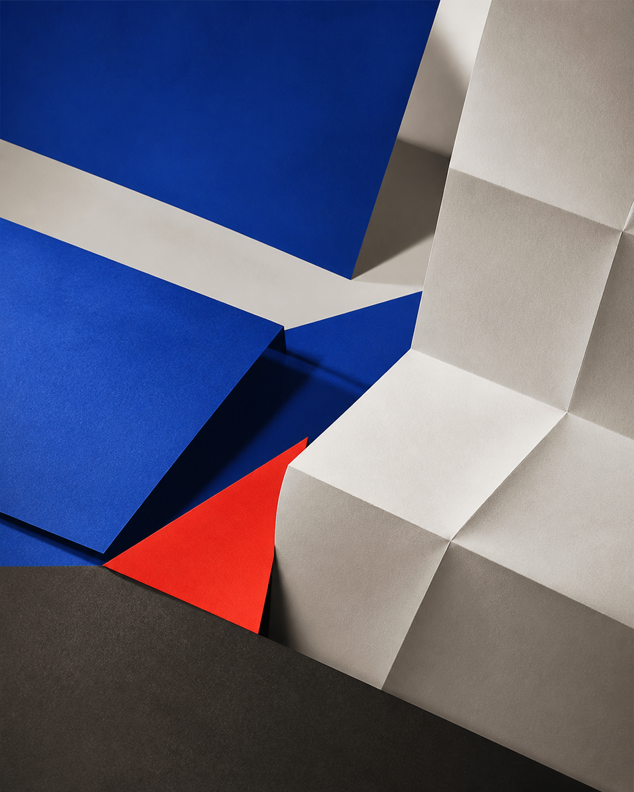
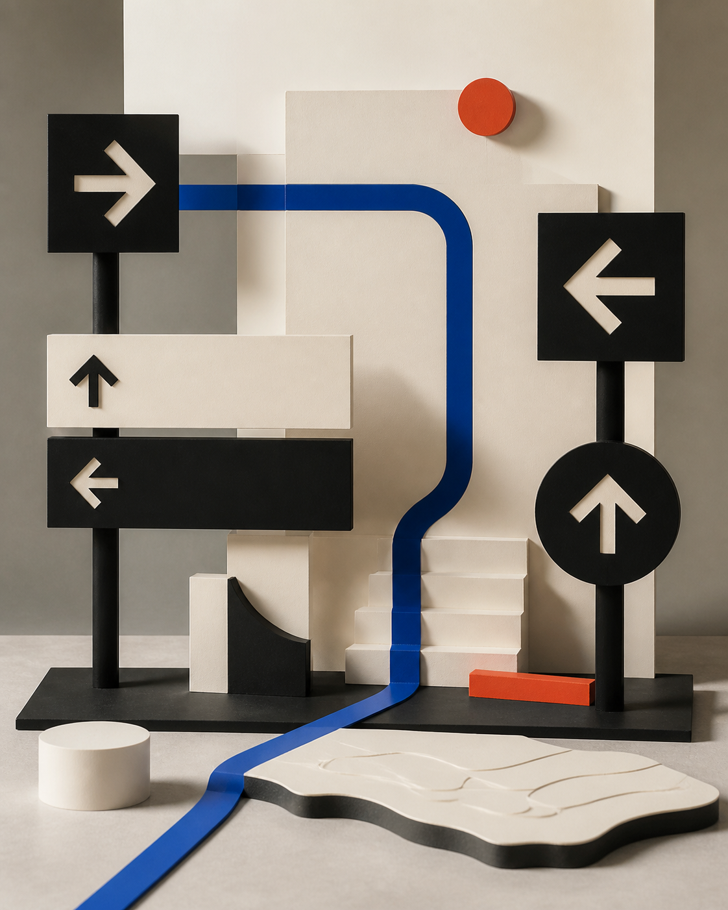
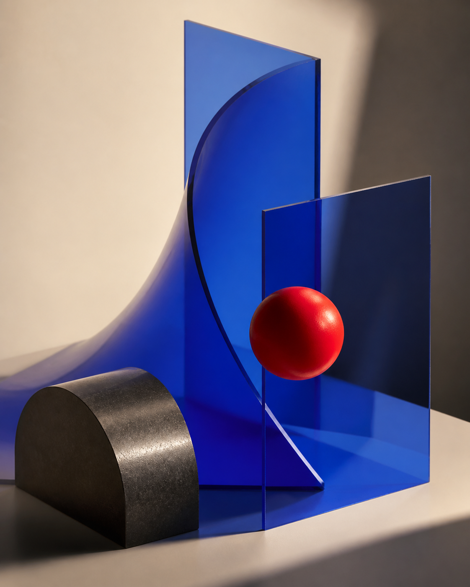

Graphic & video studio / Zlín
Nápady, které
dostávají tvar.
Tvoříme identity, weby, prostory
i pohyblivý obraz. Od prvního nápadu
až po jeho finální podobu.
01Městská plovárna LuhačoviceOrientační systém
02Architektonický ateliérOrientační systém
03AWLOrientační systém
04GreinerOrientační systém
Vybrané reference
15 projektů

01

02
03
Co děláme
Od prvního náčrtu
po finální detail.
Identita & tiskOrientace v prostoruWebové prezentaceVideo & motionPolepy vozidel
Kdo jsme
Studio Herman² bylo založeno v roce 2010.
Během let se z původního dvoučlenného týmu rozrostlo v kreativní studio propojující specialisty z různých oborů, kteří společně realizují projekty od prvotní myšlenky až po finální výstupy.
Podle charakteru zakázky sestavujeme tým specialistů, který propojuje zkušenosti z oblasti brandingu, grafického designu, videoprodukce, webdesignu, marketingové komunikace, event marketingu i technického zajištění akcí.
Věříme, že kvalitní značka nevzniká pouze dobrým grafickým návrhem. Vzniká pochopením projektu, promyšlenou strategií a schopností propojit kreativitu s praktickým využitím napříč všemi komunikačními kanály.
Mezi naše klienty patří
Oxalis · Top Natur · MMcité · IVF Zlín · Greiner · Cardbox Packaging · Město Zlín · ČSSZ · Steza Zlín · Dentimed · Město Luhačovice · TSS Group a další